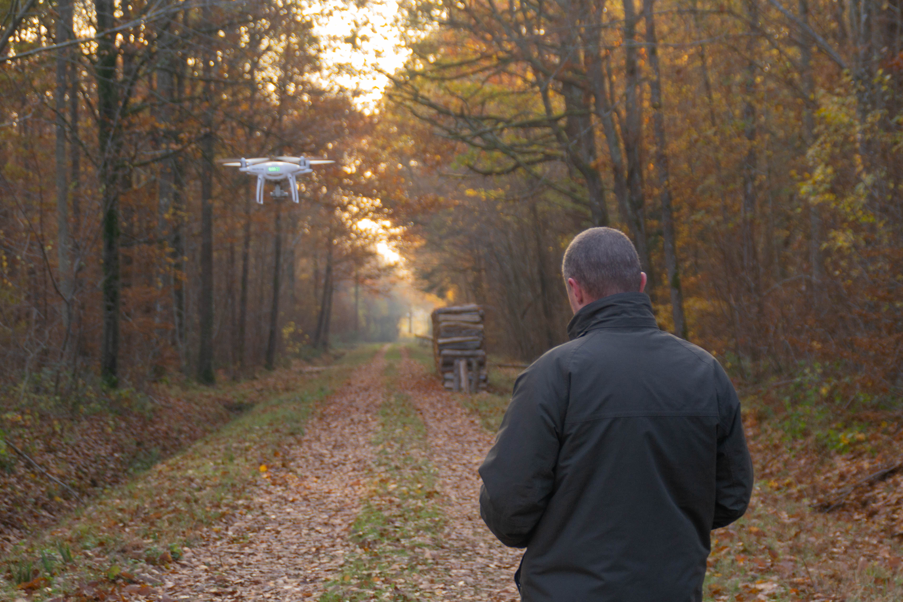

Bienvenue sur mon site
Ut enim benefici liberalesque sumus, non ut exigamus gratiam (neque enim beneficium faeneramur sed natura propensi ad liberalitatem sumus), sic amicitiam non spe mercedis adducti sed quod omnis eius fructus in ipso amore inest, expetendam putamus.
In his tractibus navigerum nusquam visitur flumen sed in locis plurimis aquae suapte natura calentes emergunt ad usus aptae multiplicium medelarum. verum has quoque regiones pari sorte Pompeius Iudaeis domitis et Hierosolymis captis in provinciae speciem delata iuris dictione formavit.
Illud tamen clausos vehementer angebat quod captis navigiis, quae frumenta vehebant per flumen, Isauri quidem alimentorum copiis adfluebant, ipsi vero solitarum rerum cibos iam consumendo inediae propinquantis aerumnas exitialis horrebant.
Dum haec in oriente aguntur, Arelate hiemem agens Constantius post theatralis ludos atque circenses ambitioso editos apparatu diem sextum idus Octobres, qui imperii eius annum tricensimum terminabat, insolentiae pondera gravius librans, siquid dubium deferebatur aut falsum, pro liquido accipiens et conperto, inter alia excarnificatum Gerontium Magnentianae comitem partis exulari maerore multavit.
Quam ob rem ut ii qui superiores sunt submittere se debent in amicitia, sic quodam modo inferiores extollere. Sunt enim quidam qui molestas amicitias faciunt, cum ipsi se contemni putant; quod non fere contingit nisi iis qui etiam contemnendos se arbitrantur; qui hac opinione non modo verbis sed etiam opere levandi sunt.
Abusus enim multitudine hominum, quam tranquillis in rebus diutius rexit, ex agrestibus habitaculis urbes construxit multis opibus firmas et viribus, quarum ad praesens pleraeque licet Graecis nominibus appellentur, quae isdem ad arbitrium inposita sunt conditoris, primigenia tamen nomina non amittunt, quae eis Assyria lingua institutores veteres indiderunt.
Apud has gentes, quarum exordiens initium ab Assyriis ad Nili cataractas porrigitur et confinia Blemmyarum, omnes pari sorte sunt bellatores seminudi coloratis sagulis pube tenus amicti, equorum adiumento pernicium graciliumque camelorum per diversa se raptantes, in tranquillis vel turbidis rebus: nec eorum quisquam aliquando stivam adprehendit vel arborem colit aut arva subigendo quaeritat victum, sed errant semper per spatia longe lateque distenta sine lare sine sedibus fixis aut legibus: nec idem perferunt diutius caelum aut tractus unius soli illis umquam placet.
Sed tamen haec cum ita tutius observentur, quidam vigore artuum inminuto rogati ad nuptias ubi aurum dextris manibus cavatis offertur, inpigre vel usque Spoletium pergunt. haec nobilium sunt instituta.
Illud tamen te esse admonitum volo, primum ut qualis es talem te esse omnes existiment ut, quantum a rerum turpitudine abes, tantum te a verborum libertate seiungas; deinde ut ea in alterum ne dicas, quae cum tibi falso responsa sint, erubescas. Quis est enim, cui via ista non pateat, qui isti aetati atque etiam isti dignitati non possit quam velit petulanter, etiamsi sine ulla suspicione, at non sine argumento male dicere? Sed istarum partium culpa est eorum, qui te agere voluerunt; laus pudoris tui, quod ea te invitum dicere videbamus, ingenii, quod ornate politeque dixisti.
Une petite image pour illustrer
